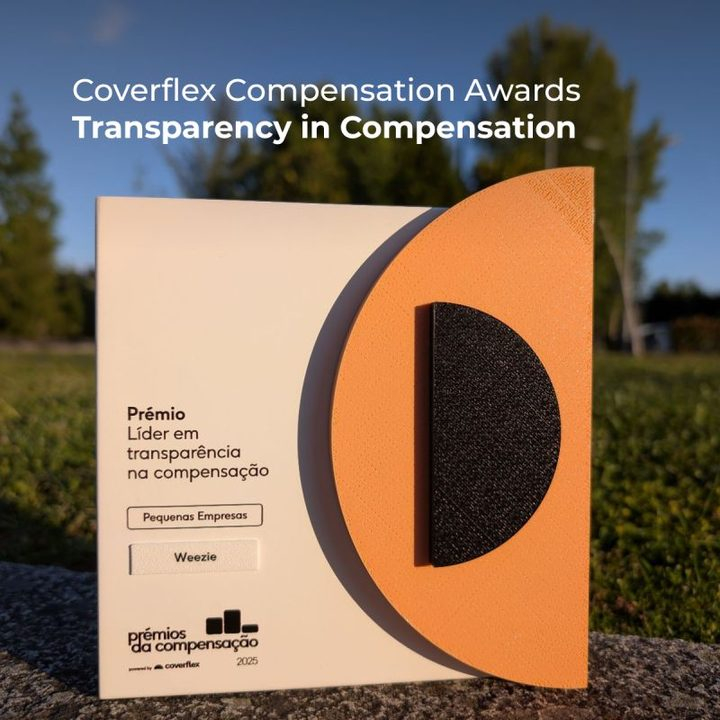
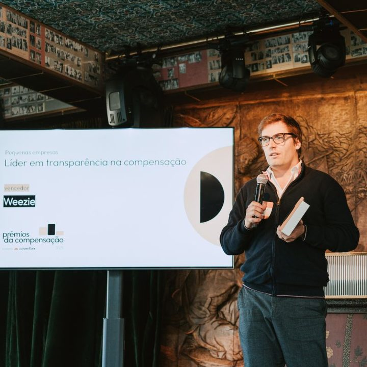

Olá,
os números da sua clínica, vistos por dentro
Sou o Rui, fundador da VCLevel. Lá trabalho como CFO fracionado: diretor financeiro a tempo parcial, em empresas que ainda não precisam de um a tempo inteiro. Trabalho com clínicas e consultórios de várias áreas da saúde: medicina, medicina dentária, fisioterapia, psicologia, estética e outras. Começo por um diagnóstico de onde a clínica está hoje e depois construo as ferramentas com que decide.
Marcar uma conversaVer os casos
Ou ler o percurso completo (em inglês).
A primeira pergunta raramente é a que importa
Quatro clínicas com que trabalhei através da VCLevel. A maioria nunca tinha tido alguém de finanças a olhar para os números por dentro.
Cada letra num círculo, nesta página, abre a fonte desse dado.
- Diagnóstico
- Preços
- Estrutura da empresa
- Ponto de equilíbrio
PsicologiaCaso 1 de 4
A pergunta em cima da mesa
“Precisamos de faturar mais.”
O que os números mostraram
Os números apontaram para a ocupação da agenda e o preço por sessão. O trabalho começou por um diagnóstico de desempenho.
Primeiro, saber quanto vale uma hora.
FisioterapiaCaso 2 de 4
A pergunta em cima da mesa
ENI ou sociedade, antes do primeiro paciente?
O que os números mostraram
A resposta veio do plano a três anos, onde o imposto poupado no primeiro ano pesava pouco.
Escolha a estrutura a pensar no terceiro ano.
Medicina dentáriaCaso 3 de 4
A pergunta em cima da mesa
Os nossos preços estão certos para os pacientes de convenções?
O que os números mostraram
Os preços partiam do princípio de que havia cerca de sete vezes mais pacientes de convenções do que a clínica tinha na realidade. As faltas eram uma segunda fuga na margem.
Primeiro os dados, depois o preço.
Clínica médicaCaso 4 de 4
A pergunta em cima da mesa
O que precisamos de saber antes de assinar o arrendamento?
O que os números mostraram
Dois números: onde está o ponto de equilíbrio e quantos meses aguenta até lá chegar. Fora das grandes cidades, juntam-se os incentivos ao interior e uma sociedade que possa receber sócios mais tarde.
O arrendamento é a primeira grande decisão.
Casos reais, partilhados com autorização dos clientes: só o setor, sem nomes nem locais, e rácios em vez de valores.
Antes da próxima grande decisão
O trabalho é mais útil antes de uma decisão difícil de desfazer: uma tabela de preços, um arrendamento, uma empresa.
Provavelmente vai querer falar comigo se
- Nunca fez as contas a quanto vale uma hora da agenda
- Não tem a certeza de que os preços das convenções ainda compensam
- As faltas preocupam, mas ninguém as pôs em números
- Está prestes a assinar o arrendamento de um novo espaço
- Está a decidir entre ENI e sociedade
- Quer candidatar-se a fundos ou aos incentivos ao interior
- Vai receber um sócio ou falar com o banco
- A equipa está a crescer e ainda não há regras para quanto ganha cada função
Alguém de dentro, a trabalhar de fora
Trabalho com todas as áreas da clínica, da receção à equipa clínica, para que cada número se transforme numa ação.
- DiagnósticoOnde a clínica está hoje: quanto vale uma hora da agenda, a ocupação e as faltas, os pacientes de convenções face aos particulares, e quanto custa cada serviço.
- Pensar o negócioOlho para a clínica como um todo, com os sócios: os serviços, os preços, a equipa e de onde pode vir o crescimento.
- Ferramentas para decidirFeitas para a sua clínica: o modelo de preços, o ponto de equilíbrio, a previsão de tesouraria, o painel mensal. Com elas, ocupo o lugar do diretor financeiro nas grandes decisões: a tabela de preços, o arrendamento, a conversa com o banco.
- Compensação e estruturaDesenho como se paga cada função e a estrutura por trás: tabelas salariais, funções e a estrutura da empresa.
- O próximo nívelPreparo a clínica para o passo seguinte, orgânico ou não: uma segunda unidade, a entrada de um sócio ou de um investidor, uma fusão ou uma venda.
- Particulares
- Convenções
Primeiro a auditoria, depois a cadeira de CFO
Mestrado em Finanças, ISEG
PwC: auditoria financeira e, depois, assessoria em mercados de capitais e contabilidade, com a Claranet pelo meio, a trabalhar diretamente com a Microsoft
2013 – 2022
CFO e Head of HR na Weezie, software para operadores de redes de fibra, com capital de risco
2022 – hoje
Fundador da VCLevel
Em paralelo
Na PwC aprendi a perguntar de onde vem um número antes de confiar nele. Na Weezie os números são meus: o orçamento, a tesouraria, a ronda de investimento, as tabelas salariais. Nas clínicas faço o mesmo trabalho, de fora.


Prémio «Líder em transparência na compensação», 2025
Prémios da Compensação da Coverflex, categoria Pequenas empresas. Atribuído à Weezie pelo modelo de compensação e pelas tabelas salariais que desenhei para a empresa.
Insira um cartucho
- Agenda Cheia: defina o preço particular, escolha as convenções e encha a agenda. Cada convenção tem um veredicto.
- Tesouraria: as semanas em que o dinheiro entra e sai, com salários a cada 13 segundos.
- Encontre o Erro: faturas e totais que não batem certo.
- Fechar o Mês: as cinco tarefas do fecho antes dos prazos.
São brinquedos, e os números são do jogo, mas as regras vêm do trabalho. Ligue o som para ouvir a música.
O RUNWAY precisa de JavaScript.
O resto da página não.
A ou Espaço para jogar · setas ou deslizar para mover · B ou Esc para o menu
Diga-me qual é a pergunta em cima da mesa
Português, inglês e italiano. No norte de Portugal, também à distância.
Marcar uma conversarui.gomes@vclevel.ptLinkedInVCLevelO percurso completo (EN)
Fiz esta página com IA, da mesma forma que hoje faço a maior parte dos modelos para clientes: a ferramenta escreve o primeiro rascunho e eu confirmo cada número. Cada letra num círculo mostra de onde vem um número.
Fontes
Fonte B
Mestrado em Finanças, ISEG, 2013
O mestrado em Finanças do ISEG está em 33.º lugar no mundo e no top 3 nacional no ranking Masters in Finance 2026 do Financial Times (programas sem experiência profissional), onde aparece desde 2020: ISEG.
Fonte D
€500M em transações assessoradas em IFRS
PwC Capital Markets & Accounting Advisory, 2018–2022. Os clientes são confidenciais; posso explicar os tipos de operação.
Fonte E
Ronda seed de €3M em 2024
Ronda de €3M liderada pela GED Ventures Portugal, fevereiro de 2024: ECO, 6.2.2024.
Fonte F
−34% no tempo de fecho do mês, −28% na exposição cambial, 20 meses sem saídas voluntárias numa equipa de 23
Reporte de gestão da Weezie; números de antes e depois a pedido. O número das saídas é público: o meu post no LinkedIn, ago. 2025.
Fonte G
Prémio «Líder em transparência na compensação», 2025
Prémios da Compensação 2025 (Coverflex), categoria Pequenas empresas: Weezie no LinkedIn, maio de 2025.